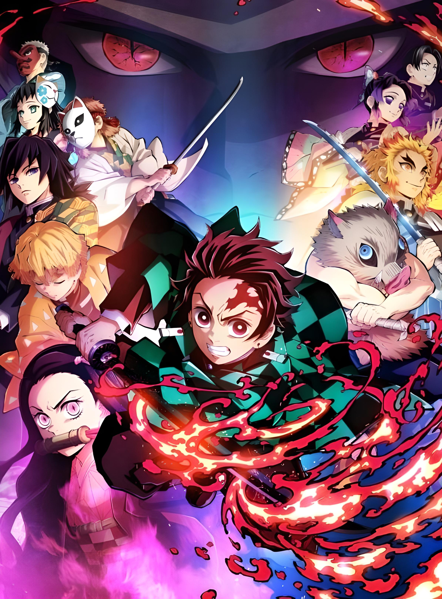
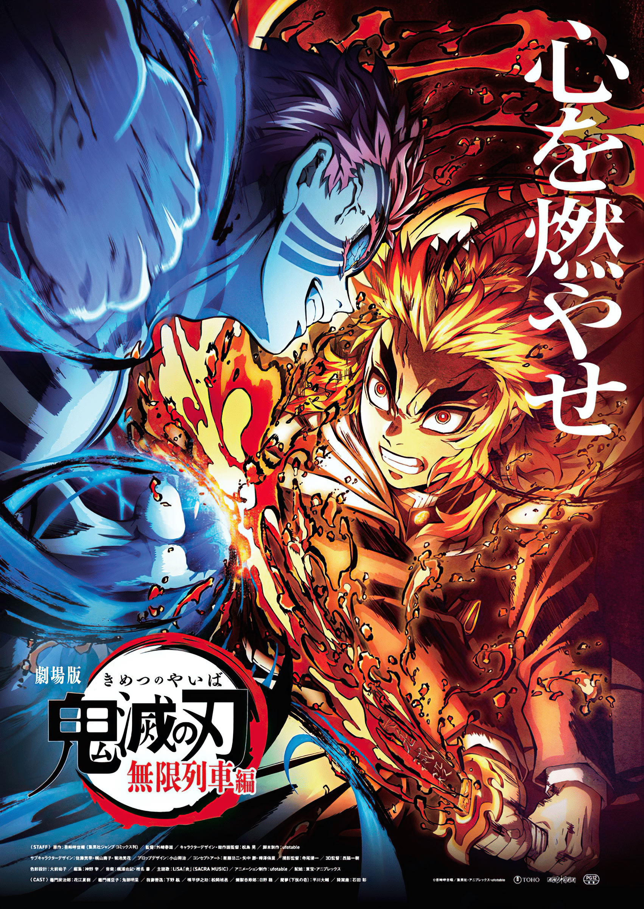
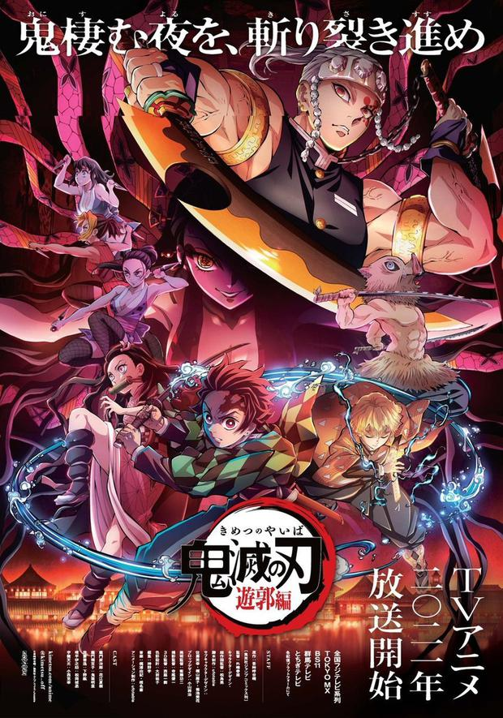

|  |
ANIME DEL MOMENTODemon Slayer: Kimetsu no Yaiba se ha posicionado como uno de los animes más vistos a nivel muldial en los últimos años, generando increíbles ganancias desde el estreno de su película Mugen ressha-hen o Tren Infinito en su traducción y logrando vender millones de copias del manga después del estreno de la primera temporada en la adaptación del anime. POPULARIDADSin duda la popularidad que ha conseguido es gracias a los fanáticos que actualmente han ido incrementando rápidamente, pues Ufotable la casa animadora del anime ha logrado impresionar al público no solo por haber superado las espectativas de todos, sino también por haber superado el mismo manga, pues con la segunda temporada recién finalizada nos han dejado claro todo lo que pueden ofrecer, es por esto que considero debe estar entre los primeros en la lista de este top anime. |
 |
|  |